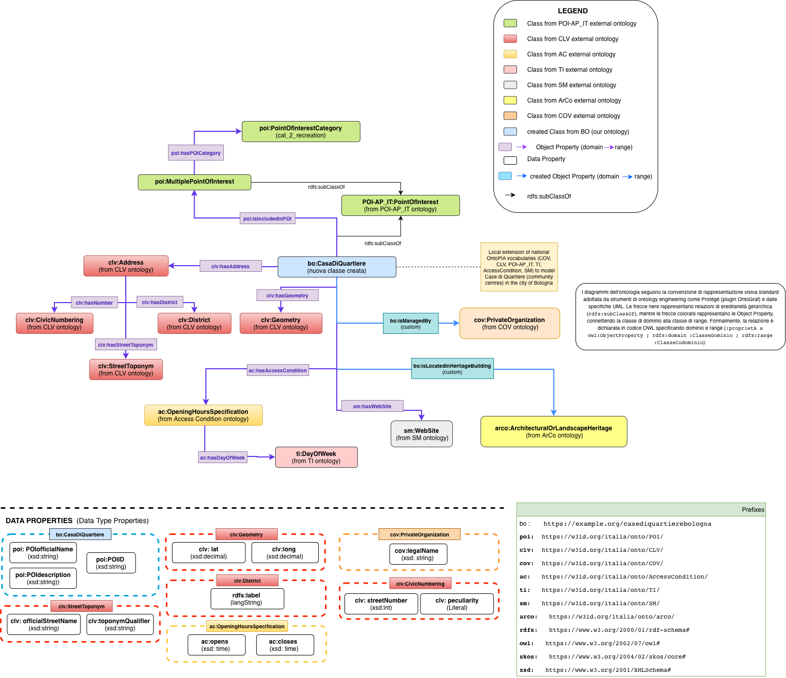

Processo di modellazione dell'ontologia
Il criterio guida della modellazione è il riuso dei vocabolari controllati della Pubblica Amministrazione italiana: le classi e le proprietà già disponibili non vengono ridichiarate, ma reimpiegate così come definite nei rispettivi namespace. L'estensione bo: interviene solo dove questi vocabolari non coprono un concetto specifico del dominio.
Fasi della progettazione dello schema
Le fasi seguenti riguardano esclusivamente la costruzione dello schema ontologico. Corrispondono, nell'articolazione più generale del progetto descritta nella pagina Metodologia, alle fasi 1 (analisi del gap ed esplorazione ontologica) e 2 (progettazione dello schema).
- Analisi del gap concettuale. Studio degli attributi del dataset "Case di Quartiere di Bologna" (denominazione, indirizzo, gestore, orari di apertura, aree verdi e ortive, quartiere di appartenenza, coordinate geografiche) per individuare i concetti non rappresentabili con i soli vocabolari controllati esistenti.
- Esplorazione della rete OntoPiA e di ArCo. Ricognizione sistematica delle classi e delle proprietà già disponibili, quali indirizzo, organizzazione, condizioni di accesso e punti di interesse, da riusare al posto di reinventarle.
- Modellazione concettuale in draw.io. Rappresentazione grafica della sola porzione di schema priva di copertura, per definire la gerarchia di classi e le relazioni di dominio e codominio prima della formalizzazione in OWL.
- Formalizzazione in Turtle dell'estensione
bo:. Scrittura della classebo:CasaDiQuartieree delle proprietà oggettobo:isManagedByebo:isLocatedInHeritageBuilding, con le relative etichette e i commenti in lingua italiana.
La validazione logica dello schema, effettuata sul grafo completo comprensivo delle istanze generate con gli LLM, corrisponde alla fase 4 della metodologia generale ed è descritta nel riquadro seguente.
Riuso dei vocabolari controllati
In linea con i principi dell'ontology engineering, e in particolare con il criterio del riuso, il progetto evita di ridichiarare classi o proprietà già disponibili nei vocabolari ufficiali della Pubblica Amministrazione italiana. Le classi e le proprietà elencate di seguito sono riusate mantenendo inalterati gli IRI originali, così come definiti nei rispettivi namespace.
cov:Core Organization Vocabulary: rappresentazione di organizzazioni pubbliche e private, utilizzata per modellare l'ente gestore di ciascuna Casa.clv:Core Location Vocabulary: rappresentazione di indirizzi, geometrie e articolazioni amministrative del territorio, utilizzata per indirizzo, coordinate e quartiere di appartenenza.poi:Points of Interest: rappresentazione dei punti di interesse; fornisce la classe di cuibo:CasaDiQuartiereè sottoclasse.
ti:Time Interval: rappresentazione di intervalli temporali, utilizzata per i giorni della settimana negli orari di apertura.ac:Access Condition: rappresentazione delle condizioni di accesso, utilizzata per gli orari di apertura di ciascuna Casa.arco:ArCo: ontologia dei beni culturali italiani, utilizzata per collegare una Casa all'edificio storico che eventualmente la ospita.
L'intera rete di vocabolari controllati OntoPiA è mantenuta e documentata dal team Developers Italia: github.com/italia/daf-ontologie-vocabolari-controllati.
Estensione minima del vocabolario: namespace bo:
Esclusivamente per i concetti del dominio privi di copertura nei vocabolari riusati è stata introdotta una piccola estensione, con prefisso bo: (https://example.org/casediquartierebologna#).
Classe: bo:CasaDiQuartiere
La classe è definita come sottoclasse di poi:PointOfInterest, di cui eredita le proprietà proprie dei punti di interesse (identificativo, denominazione ufficiale, indirizzo, geometria). Rappresenta la Casa di Quartiere come spazio comunitario, distinguendola dalle altre tipologie di punti di interesse presenti nel territorio comunale.
bo:CasaDiQuartiere
a owl:Class ;
rdfs:subClassOf poi:PointOfInterest ;
rdfs:label "Casa di Quartiere"@it ;
rdfs:comment "Spazio comunitario gestito da associazioni del terzo
settore, parte della rete istituzionale del Comune di Bologna."@it .Proprietà: bo:isManagedBy
La proprietà oggetto collega un'istanza di bo:CasaDiQuartiere all'organizzazione, tipizzata come cov:PrivateOrganization, che ne cura la gestione; corrisponde alla colonna gestore del dataset di origine.
bo:isManagedBy
a owl:ObjectProperty ;
rdfs:domain bo:CasaDiQuartiere ;
rdfs:range cov:PrivateOrganization ;
rdfs:label "è gestita da"@it .Proprietà: bo:isLocatedInHeritageBuilding
La proprietà oggetto collega un'istanza di bo:CasaDiQuartiere al bene architettonico ArCo che la ospita, nei casi in cui l'edificio risulti catalogato come patrimonio storico o architettonico.
bo:isLocatedInHeritageBuilding
a owl:ObjectProperty ;
rdfs:domain bo:CasaDiQuartiere ;
rdfs:range arco:ArchitecturalOrLandscapeHeritage ;
rdfs:label "è ubicata nell'edificio storico"@it .Diagramma delle classi
Il diagramma delle classi, elaborato in draw.io nella fase di modellazione concettuale (fase 3) e successivamente aggiornato per riflettere lo schema definitivo, è riportato di seguito:

Esempio di istanza
Si riporta di seguito un esempio semplificato dell'istanziazione dei pattern precedentemente descritti per una singola Casa di Quartiere:
bo:CasaEsempio a bo:CasaDiQuartiere ;
poi:POIID "CQ99" ;
poi:POIofficialName "Casa Esempio"@it ;
clv:hasAddress bo:AddressCasaEsempio ;
clv:hasGeometry bo:GeometriaCasaEsempio ;
bo:isManagedBy bo:GestoreCasaEsempio ;
sm:hasWebSite <http://www.esempio-casa.it> ;
ac:hasAccessCondition bo:OrarioCasaEsempio_Lun_Mattina .
bo:AddressCasaEsempio a clv:Address ;
clv:hasStreetToponym bo:ViaEsempio ;
clv:hasNumber bo:Civico22_3 ;
clv:hasDistrict bo:QuartierePortoSaragozza ;
clv:hasCity bo:ComuneBologna .
bo:OrarioCasaEsempio_Lun_Mattina a ac:OpeningHoursSpecification ;
ac:opens "09:00:00"^^xsd:time ;
ac:closes "13:00:00"^^xsd:time ;
ac:hasDayOfWeek ti:Monday .Schema completo
Lo schema completo, corredato dalle note di modellazione, è disponibile per il download: schema_case_di_quartiere.ttl